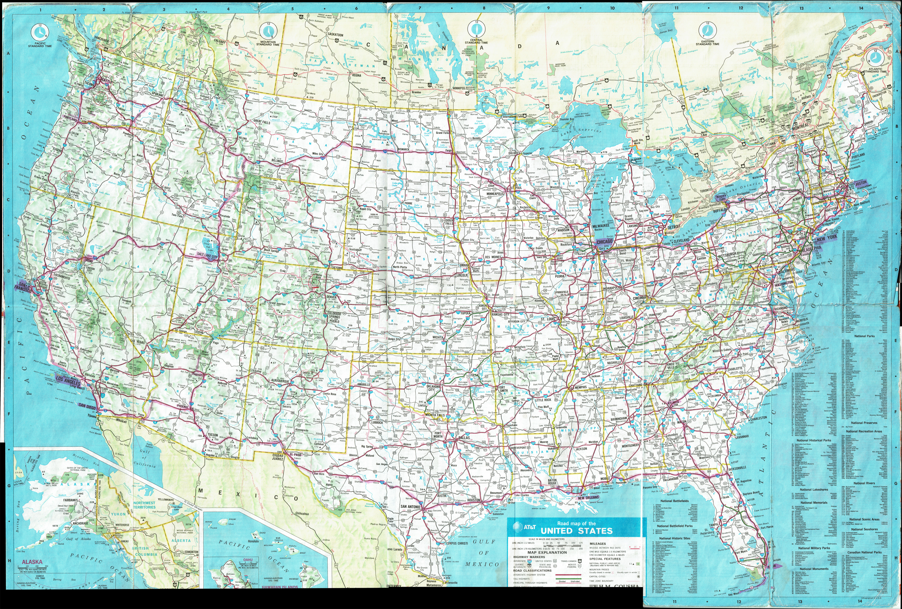
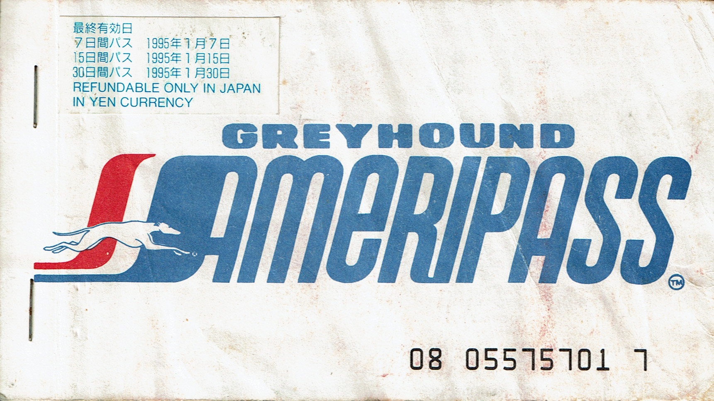
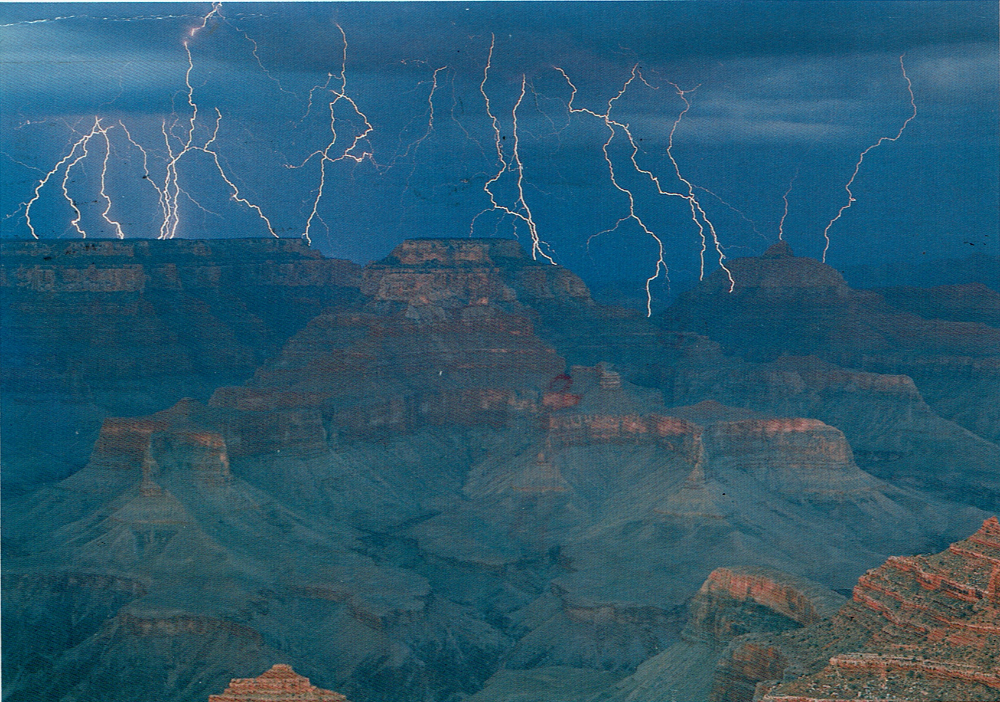
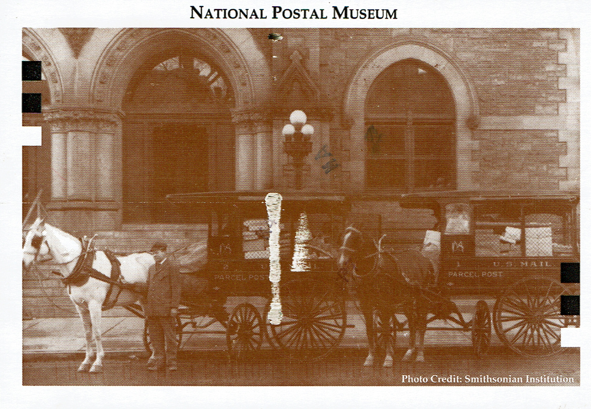
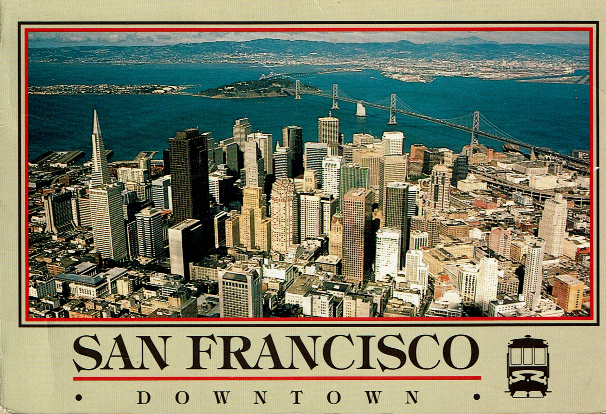
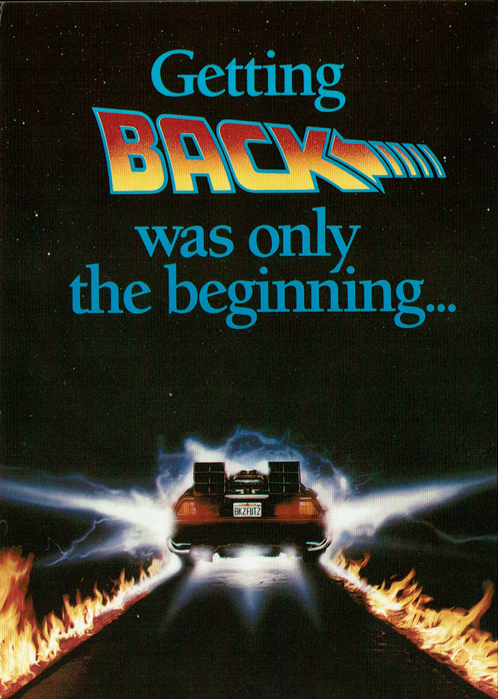

アメリカ横断 1994
旅の概要
大学3年の夏、約7週間をかけてアメリカを一人で巡った旅。ロサンゼルスから出発し、 西海岸、北部、東海岸、南部を経て、グランドキャニオンとラスベガスを通り、再びロサンゼルスへ戻った。
飛行機とGreyhoundを使い、スマートフォンもインターネット予約もない時代に、 紙の地図、事前に作った旅程表、現地のバスターミナルで確認した時刻を頼りに移動した。
蛍光ペンでたどるアメリカ
旅の最中に使った AT&T の全米道路地図。手書きの蛍光ペンの線が、 約7週間にわたる移動の大きな輪郭を残している。

主なルート
7/20〜8/15 西から東へ
東京 → ロサンゼルス → サンフランシスコ → ソルトレイクシティ → ポートランド → シアトル → イエローストーン → シカゴ → ナイアガラフォールズ → ボストン → ニューヨーク
8/15〜8/29 東海岸から南部へ
フィラデルフィア → ワシントンD.C. → アトランタ → ジャクソンビル → マイアミ → キーウェスト → ニューオーリンズ → ヒューストン → オースティン → ダラス
8/29〜9/9 南西部を経て帰国
オクラホマシティ → アルバカーキ → サンタフェ → グランドキャニオン → フラッグスタッフ → フェニックス → ラスベガス → ロサンゼルス → サンディエゴ → 東京
出発前の TRAVEL SCHEDULE
渡米前に作成したワープロの旅程表。到着・出発時刻まで並ぶ一方、赤い書き込みや日記、乗車券からは、 現地で予定を変えながら進んだこともうかがえる。
Greyhound の乗車記録
残っている乗車券は、実際に移動した日付と区間を示す一次資料。旅程表にないサンフランシスコからリノへの移動も確認でき、 予定どおりに進むだけではなかった旅の輪郭が見えてくる。

Greyhound Ameripass
全米を長距離バスで移動するために使ったパス。紙の表紙の傷みも含めて、旅の時間をそのまま残す資料になっている。
| 日付 | 確認できる区間 | 備考 |
|---|---|---|
| 7/21 | ロサンゼルス → サンフランシスコ | 旅の最初の長距離移動 |
| 7/24 | サンフランシスコ → リノ | 旅程表にはない区間 |
| 8/2 | ポートランド → シアトル | 西海岸を北上 |
| 8/4 | シアトル → シカゴ | ミネアポリス経由 |
| 8/10 | バッファロー → ボストン | Ameripass 利用 |
| 8/13 | ボストン → ニューヨーク | 東海岸へ |
| 8/16 | ニューヨーク → フィラデルフィア | 南下開始 |
| 8/23 | マイアミ → キーウェスト | 日帰りの往復区間の片道 |
| 8/24 | マイアミ → ニューオーリンズ | ジャクソンビル経由 |
| 9/4 | サンディエゴ → ロサンゼルス | 帰国前の移動 |
1994年の旅のつくり方
旅程表と紙の地図
渡米前にワープロで作成した TRAVEL SCHEDULE と、蛍光ペンでルートを書き込んだ AT&T の全米道路地図を携行した。
現地で時刻を確認
Greyhound のデポで次の便を調べ、必要な時刻を書き写しながら旅程を組み立てた。予定にないリノ宿泊など、現地での変更もあった。
手紙で準備する旅
Susanさんがユースホステルへの予約手紙やニューヨーク滞在の注意事項を用意してくれた。オンライン予約以前の旅の準備も、この旅の大切な一部。
旅先からの絵葉書
途中で送った絵葉書の表面。グランドキャニオン、ワシントンD.C.、サンフランシスコ、ユニバーサル・スタジオの4枚が残っている。




残っている記録
| 資料 | 分かること | 公開状況 |
|---|---|---|
| TRAVEL SCHEDULE | 出発前に立てた日程と主な都市 | 掲載済み |
| AT&T 全米道路地図 | 蛍光ペンで引いた実際のルート | 掲載済み |
| Greyhoundチケット・日記 | 実際の乗車区間、日時、予定変更 | 乗車券10枚を掲載・照合中 |
| 絵はがき | 旅の途中の言葉、日付、訪問地 | 表面のみ掲載済み |
この記録について
これは32年前の紙資料・日記・写真・現在の記憶を突き合わせながら、旅を再構築するアーカイブです。 計画と実際の行程が異なる箇所は、資料で確認できた内容を優先し、未確認の部分は未確認のまま残します。